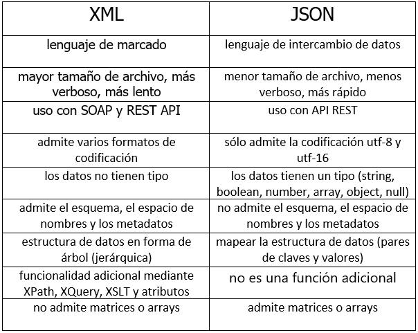

(JavaScript Object Notation) JSON es un lenguaje usado para el intercambio de datos entre sistemas, está basado en la notación de los literales de objeto de Javascript.
Son las siglas de "Extensible Markup Language", el lenguaje de marcado extensible. Lenguaje de marcado quiere decir que está compuesto por marcas o etiquetas (tags en inglés). Extensible significa que a partir de XML se pueden construir diversos otros lenguajes.
API es la interfaz de programación de aplicaciones; Las API le otorgan flexibilidad; simplifican el diseño, la administración y el uso de las aplicaciones; y ofrecen oportunidades de innovación, lo cual es ideal al momento de diseñar herramientas y productos nuevos (o de gestionar los actuales); API REST es una interfaz de programación de aplicaciones que se ajusta a los límites de la arquitectura REST y permite la interacción con los servicios web de RESTful
Es un servicio que hace posible la comunicación de máquina a máquina y el intercambio de datos entre aplicaciones a través de una red de Internet.
